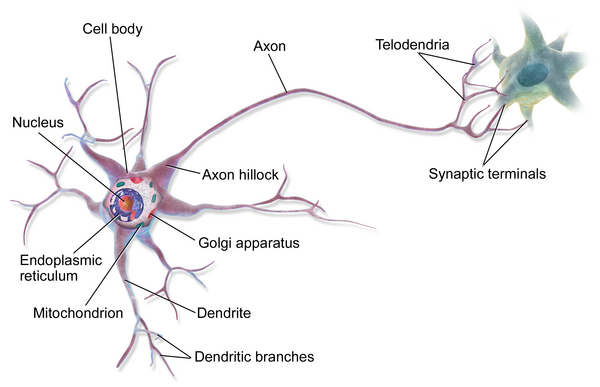

앞 장에서 우리는 모형이란 \(X\)와 \(y\)의 관계를 수학적으로 표현한 것이라고 배웠다. 그런데 인간의 뇌는 어떤 수학 공식도 없이, 사진 한 장만 보고도 “고양이”와 “개”를 구분하고, 처음 듣는 문장의 의미를 즉시 이해한다.
이렇게 복잡한 문제를 자연스럽게 푸는 뇌의 비밀은 무엇일까?
핵심 아이디어: 뇌의 뉴런(neuron) 하나하나는 매우 단순한 연산만 수행한다. 하지만 수백억 개의 뉴런이 연결(network)되면 놀라운 능력이 나타난다. 이 원리를 수학으로 옮긴 것이 인공신경망이다.
생물학적 뉴런의 구조
사람의 뇌는 약 860억 개의 뉴런으로 이루어져 있다. 각 뉴런은 수천 개의 다른 뉴런과 연결되어 전기적 신호를 주고받는다.

생물학적 뉴런의 구조 (Blausen Medical, CC BY 3.0)
뉴런의 신호 전달 과정:
수상돌기(Dendrite)가 다른 뉴런으로부터 신호를 수신
세포체(Cell body)에서 신호를 합산
합산된 신호가 임계값을 넘으면 활성화
축삭(Axon)을 통해 다음 뉴런으로 신호를 전달
시냅스(Synapse)에서 연결 강도에 따라 신호의 세기가 조절됨
이 과정이 수백억 번 동시에 일어나면서 인간의 사고가 이루어진다.
생물학적 뉴런 → 인공 뉴런
수상돌기, 세포체, 축삭 같은 이름은 잠시 잊어도 좋다. 뉴런이 하는 일을 한 문장으로 줄이면 이렇다.
뉴런은 입력 신호를 받아서 출력 신호로 바꾸는 장치다.
여러 개의 신호가 들어오면, 그것을 종합해서 하나의 신호를 내보낸다. 그게 전부다. 이 “입력 신호 → 출력 신호” 과정을 수학으로 옮기면 인공 뉴런이 된다.
인공 뉴런 (Artificial Neuron)
입력 신호를 받아 출력 신호로 바꾸는 계산 단위. 생물학적 뉴런의 신호 처리를 수학적으로 모방한 것이다.
앞 장에서 배운 \(X\)와 \(y\)의 언어로 다시 말하면 다음과 같다.
뉴런에 한 번에 들어오는 입력 신호 한 묶음이 곧 데이터 포인트 하나다. 앞 장의 예시라면 “사원 1”의 정보가 한 묶음으로 뉴런에 들어간다.
입력 신호에는 여러 종류가 있다(경력, 나이, 근무 지역 등). 이 종류 하나하나가 변수 \(x_1, x_2, x_3, \ldots\) 즉 \(X\)다.
입력 신호가 뉴런을 거쳐 변환되어 나온 출력 신호가 \(y\)다. 뉴런이 계산해 낸 값이므로 \(\hat{y}\)로 쓴다.
생물학적 뉴런
하는 일
인공 뉴런
수상돌기 (Dendrite)
여러 신호를 받아들임
입력 \(x_1, x_2, \ldots\) (데이터 포인트 하나의 각 변수)
시냅스 (Synapse)
신호마다 중요도를 조절
가중치 \(w_1, w_2, \ldots\)
세포체 (Soma)
신호를 합침
가중합 \(\Sigma\)
축삭 (Axon)
합친 결과를 내보냄
활성화 함수 → 출력 \(\hat{y}\)
인공신경망 (Artificial Neural Network)
뉴런 하나가 하는 일은 “입력 신호 몇 개를 받아 출력 신호 하나를 내놓는” 단순한 계산뿐이다. 그런데 뇌에서는 한 뉴런의 출력 신호가 다음 뉴런의 입력 신호가 된다. 이렇게 수백억 개의 뉴런이 서로 연결되어 신호를 주고받기 때문에, 우리는 사물을 알아보고, 말을 이해하고, 몸을 움직일 수 있다.
인공 뉴런도 마찬가지다. 뉴런 하나의 출력이 다음 뉴런의 입력이 되도록 수천~수백만 개를 연결한 것이 인공신경망이고, 이 연결 덕분에 이미지 인식, 자연어 처리 같은 복잡한 문제를 풀 수 있다.
퍼셉트론 (Perceptron)
정의
앞에서 본 인공 뉴런 하나를 퍼셉트론(Perceptron)이라고 부른다.
퍼셉트론 (Perceptron)
딥러닝을 구성하는 기본요소. 입력값을 받아 출력값으로 변환하는 단위. 아무리 복잡한 딥러닝 모델(GPT, 이미지 분류기 등)도 결국 퍼셉트론의 조합으로 이루어진다.
퍼셉트론의 5가지 구성요소
퍼셉트론 내부에서 데이터가 왼쪽에서 오른쪽으로 흐르며 처리되는 과정을 단계별로 따라가 보자.
결국 하나의 선형 변환 \(W'\)로 축소된다. 층을 아무리 깊게 쌓아도 직선 경계밖에 못 만든다.
비선형 활성화 → 비선형 경계
각 층의 출력에 비선형 활성화 함수를 적용하면 상황이 달라진다.
은닉층의 각 노드가 입력 공간을 접고(fold), 휘어(bend) 새로운 표현을 만든다
이 표현들이 조합되면서 곡선, 원, 임의의 복잡한 경계를 만들 수 있다
Universal Approximation Theorem
충분한 수의 은닉 노드와 비선형 활성화 함수를 가진 다층 퍼셉트론은 임의의 연속 함수를 원하는 정밀도로 근사할 수 있다.
이론상으로 컴퓨터가 수행하는 처리도 모두 표현 가능
딥러닝은 이 다층 퍼셉트론을 활용하여 사진 분류, 음성 인식, 자연어 처리 등을 수행
정리: 단일 퍼셉트론 = 직선 경계 → 비선형 활성화를 가진 다층 퍼셉트론 = 임의로 복잡한 경계. 비선형 활성화 함수는 딥러닝의 표현력을 결정하는 핵심 요소이다.
활성화 함수 (Activation Function)
그렇다면 실제로 어떤 비선형 활성화 함수가 사용되는가?
주요 활성화 함수
함수
수식
출력 범위
특징
Sigmoid
\(\sigma(z) = \frac{1}{1+e^{-z}}\)
\((0, 1)\)
확률 해석 가능
Tanh
\(\tanh(z) = \frac{e^z - e^{-z}}{e^z + e^{-z}}\)
\((-1, 1)\)
0 중심, Sigmoid보다 빠른 수렴
ReLU
\(\max(0, z)\)
\([0, \infty)\)
계산 효율적, 현재 가장 많이 사용
수치 예시: 같은 입력에 대한 활성화 함수별 출력
코드
import pandas as pdimport numpy as npzs = [-3.0, -1.0, 0.0, 0.5, 1.0, 3.0]rows = []for z in zs: sig =1/ (1+ np.exp(-z)) tanh = np.tanh(z) relu =max(0, z) rows.append({'$z$': z,'Sigmoid': f'{sig:.4f}','Tanh': f'{tanh:.4f}','ReLU': f'{relu:.1f}', })pd.DataFrame(rows).to_html(index=False, border=0, escape=False)
표 6: z값에 따른 활성화 함수 출력 비교
\(z\)
Sigmoid
Tanh
ReLU
-3.0
0.0474
-0.9951
0.0
-1.0
0.2689
-0.7616
0.0
0.0
0.5000
0.0000
0.0
0.5
0.6225
0.4621
0.5
1.0
0.7311
0.7616
1.0
3.0
0.9526
0.9951
3.0
인터랙티브 — 활성화 함수의 형태를 비교해 보세요
활성화 함수를 선택하면 \(g(z)\)와 그 도함수 \(g'(z)\)의 그래프를 확인할 수 있습니다.
도함수를 함께 그려둔 이유는 다음 장에서 드러납니다 — 학습은 기울기를 따라 일어나므로, 기울기가 0에 가까운 구간(Sigmoid의 양 끝)에서는 학습이 거의 멈춥니다. ReLU가 현재 가장 많이 쓰이는 이유가 여기에 있습니다.
viewof actChoice = Inputs.radio(["sigmoid","tanh","relu"], {label:"활성화 함수",value:"sigmoid",format: k => k ==="sigmoid"?"Sigmoid σ(z)": k ==="tanh"?"Tanh":"ReLU"})